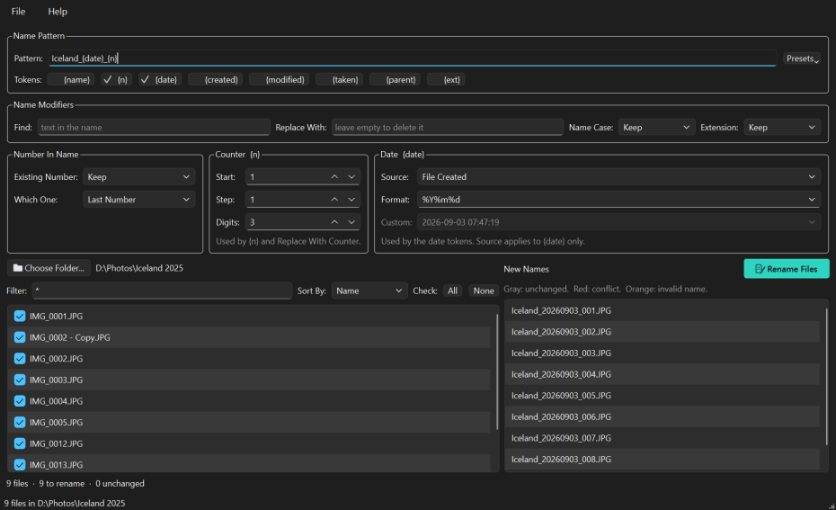

Rename a folder full of files — and see every new name before a single one changes.
Renaming a folder of files is one of those jobs that looks trivial until you try it. Select a hundred photos in Explorer, press F2, and you get photo (1).jpg through photo (100).jpg: it cannot use the date a picture was taken, it cannot keep part of the old name, and it will not show you the result before it happens. Rename tools that can do those things tend to do them blind — you set up rules, press go, and find out afterwards.
The File Rename Processing Workbench is built around the part everything else leaves out: seeing what you are about to do. The left panel is the folder as it is now, the right panel is the same files under the names they would get, and the two stay side by side as you work. Nothing is written until you press Rename Files, that button refuses to light up while any two files would collide, and if the result is still not what you wanted, one menu item puts every file back.
IMG_4821.JPG tells you nothing; Iceland_20250714_012.JPG sorts by date and says where you wereHoliday_{n} puts a word you chose in front of every fileIMG_0042, can be kept, renumbered, replaced with a date, or removedNo account, no telemetry, no network. FRWB reads the folder you point it at and nothing else. The only request it ever makes is checking whether the online manual is reachable, and only when you press F1.
Free, and you do not need Python or anything else installed.
Download for Windows Download for macOS Source on GitHubBoth buttons bring you to the GitHub release page: scroll down to the Assets section. On Windows take frwbSetup-1.0.0.exe to install it, or FRWB-1.0.0-portable.zip if you would rather unzip a folder and run it from anywhere, including a USB stick. On macOS take FRWB-1.0.0-macos.zip, unzip it and move the app to Applications.
The Windows installer is per-user, so it asks for no administrator rights and installs nothing machine-wide. On macOS, right-click the app and choose “Open” the first time, because the download is unsigned. Every build is produced by a public workflow straight from the source and checks itself — that it kept its icons and its manual, and that it starts — before it is published.

Visit the FRWB SiteScreenshots and the full user manual.
All DownloadsInstaller, portable zip and the macOS app.
Read the ManualAlso on F1 inside the application.
FRWB is free and open source. There is no licence to buy, no account to make, no ads, and nothing about you is collected or sent anywhere. That is also why software like this is hard to sustain: there is no subscription to bill and no data to sell, so nothing pays for the work behind it.
The hard part of a renaming tool is not writing it, it is keeping it trustworthy. Windows and macOS shift underneath it, the libraries it is built on move on, camera makers invent another way of storing the date a photo was taken, and every so often a real folder breaks an assumption that looked safe. Adding the macOS build to this one turned up a case where a rename could have replaced a file instead of refusing — found, fixed and covered by a test before anyone met it. That is the kind of attention a donation pays for, and it funds the next free tool as well as the upkeep of this one.
If FRWB saved you an evening of renaming files by hand, or caught a clash before it cost you an original, please consider chipping in.
DonateSecure payment through PayPal — no account required, and any amount is appreciated. Thank you for supporting independent, open source software.